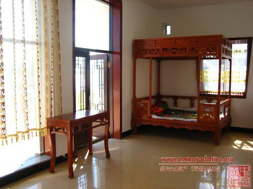
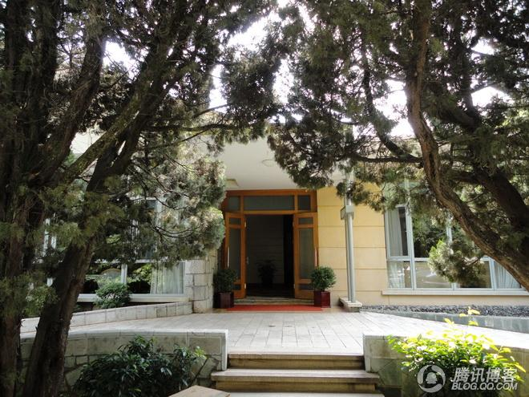
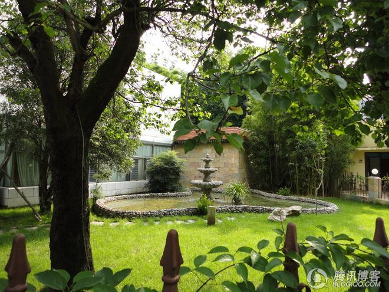
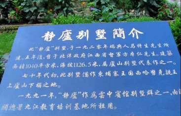
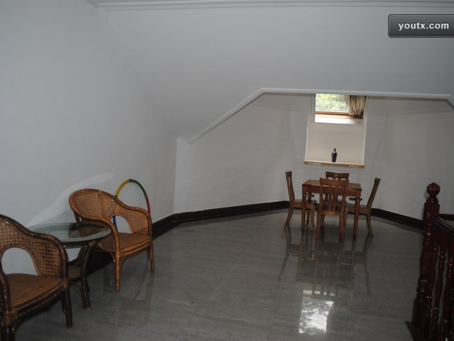
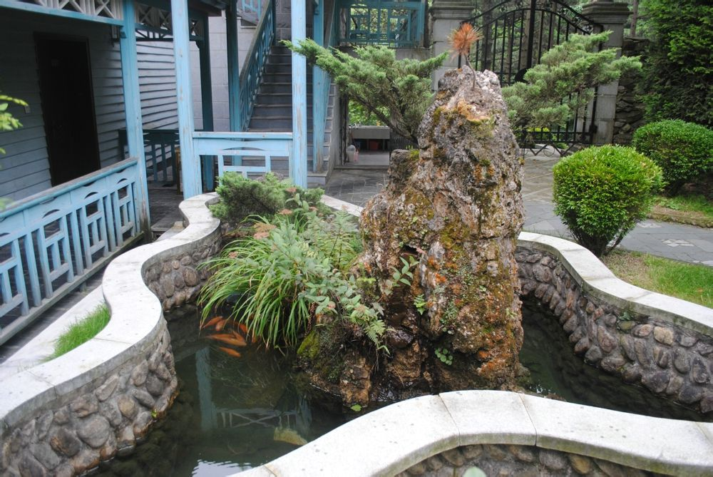

昨天写了长篇博文《最“纯正”的共产主义政权——红色高棉简史》，重点介绍共产运动造的孽。
今天再转载几篇有关西哈努克的网文，让大伙儿体会一下慈禧老佛爷的名言——【宁赠友邦，不予家奴】。
（香艳的西哈努克亲王）
俺博客上，和本文相关的帖子（需翻墙）：
最“纯正”的共产主义政权——红色高棉简史
今天再转载几篇有关西哈努克的网文，让大伙儿体会一下慈禧老佛爷的名言——【宁赠友邦，不予家奴】。
（香艳的西哈努克亲王）
★《谁是中国最幸福的人？》
莫言获得诺奖，央视美女采访，用时下流行的招呼语问：你幸福吗？就跟过去中国老百姓见面习惯问“你吃了没？”是一样的。莫言圆滑的回答说：“我不知道，我从来不考虑这个问题”。在他看来，“幸福”就是什么都不想，一切都放下，身体健康，精神没有什么压力。而他现在“压力很大，忧虑重重，能幸福么？”莫言最后说，“我要说不幸福，那也太装了吧。刚得诺贝尔奖能说不幸福吗？”莫言很聪明，把这个很二的问题踢给了对方。
幸福纯粹是个人体验，穿什么鞋舒服只有自己的脚丫子知道，而央视不知抽了哪根筋满世界问人家“你幸福吗？”，全然不顾拔掉鞋后会是臭脚丫子味儿。如果央视那群人实在想不出好的创意，可以问计于民啊，有满世界抽筋儿的劲头，整理出几个好创意并不难。
细想一下在中国什么人最幸福，这个问题还真不好回答。说当官的幸福也不竟然，带块表抽颗烟“偶尔疑似傻笑”也会锒铛入狱，你说能幸福吗？说有钱人幸福也难服众，平日里受潜规则的盘剥不算，倘若遇到“黑打”不光倾家荡产连性命也会搭上，你说能幸福吗？如果中国是富人的天堂，干嘛他们都在搞移民？如果说老百姓幸福，你信吗？
难道在中国真的找不出幸福的人吗？有啊！那就是被我们当爷爷般供养了50多年的西哈努克。对这位“中国人民伟大的朋友”，中国人民饿着肚子供养他，比他在柬埔寨当国王还要奢华。为了维护他的统治，我们力挺柬埔寨王国的内战，不惜因此牺牲掉王国四分之一臣民的性命，到现在柬埔寨还在清算这段历史。而西哈努克这位老人家，在他的第二故乡中国，却安详的活到90高龄才驾鹤西去。死后还享有降半旗的哀荣。
换作你，你说幸福不？
★《1973年上海招待西哈努克亲王 百只鸡做的菜倒掉两回》
1973年，西哈努克亲王来到上海，提出要在豫园内吃一顿饭。
来上海之前，西哈努克亲王在南京夫子庙逛过，在那里吃过一顿饭，尝了十二道点心。南市区饮食公司听说此事后，一定要让亲王吃十四道点心，体现上海城隍庙的水平。一声令下，豫园内的各路精英汇聚一堂，整出一套别具风味的点心，共有十四道：一叶小粽子、桂花拉糕、三丝眉毛酥、鸽蛋圆子、酒酿小圆子等。
这一政治任务下达后，公司革委会连夜调档案，查三代，苏帮点心泰斗陆苟度和周金华、谢炽川等一批“苗红根正”的高徒被选派操作。肖建平家庭成分好，也被入选。据他回忆，为了确保质量，做点心的芝麻要一粒一粒拣，糯米要一粒一粒捡，瓜仁大小、薄厚要一致。操作现场还有荷枪实弹的民兵“恭候”。西哈努克亲王夫妇在豫园内的绮藻堂品尝美点，服务员提着竹篮把点心从桂花厅送到豫园门口，再有人接应到厅堂，最后服务员送上桌，旁边始终有人监控。
肖建平说：“城隍庙为此封了三天三夜，九曲桥边一片寂静。”
为了让西哈努克亲王吃到地道的鸡鸭血汤，要求一碗血汤中的鸡卵达到“三同”标准，即直径相同、色泽相同、形状相同，这下苦了厨师，他们只得三下南翔，杀了108只鸡才找到如此高标准的鸡卵。谁料西哈努克亲王推迟了来豫园的日期，第二天再杀108只鸡。谁想到这天亲王心血来潮，跟莫尼克公主打网球停不下手，烧好的鸡鸭血汤只得倒掉。第三天2月19日，亲王总算大驾光临，对十四道美点大加赞赏，尤其是鸡鸭血汤，吃了一碗不过瘾，又来了一碗。
转载出处：
《天天新报》2008年8月10日第26版
★《西哈努克在中国的豪华行宫和奢华生活》
1970年3月18日，柬埔寨内阁首相朗诺在美国支持下发动了军事政变，宣布废黜国家元首西哈努克。西哈努克就开始了在中国的流亡生涯，在接下来的几十年里，从毛泽东、周恩来到邓小平、江泽民各届领导人都把当做一个国家元首对待。西哈努克在中国各地游行，拥有各地行宫，他的生活也可谓是奢侈靡华。
“柬埔寨元首府”，周总理亲自选地址
（照片如下）

1970年5月4日，柬埔寨在北京成立统一阵线和团结政府后，周总理指示我们外交部官员给他们选择一处办公地点。我和几位接待人员考察了许多地方，最后选择了位于海淀区的友谊宾馆。当年7月，民柬团结政府搬进友谊宾馆，柬埔寨国旗在门前高高升起。在为此举行的仪式上，西哈努克激动地说：“我衷心感谢周总理为我们政府安排了办公楼，这是民柬政府的大厦，面积很大，庄重豪华，比我们金边政府的办公楼还大，我们政府在此工作必然顺利。”周总理表示：中国大力支持柬埔寨在北京成立团结政府，并决定每年向他们提供500万元人民币的捐款，并提供警卫人员和汽车队。
西哈努克及其家属流亡中国以来一直住在钓鱼台宾馆五号楼。但是，当时中国正进行文化大革命，“四人帮”也在钓鱼台常住，警察密布，戒备森严，使外宾有所不便。周总理要求外交部给他们选择一个新住址。几年前西哈努克访华时，曾住在东交民巷15号宾馆，那是清朝法国驻北京的公使馆。
1970年12月，东交民巷15号修缮一新，西哈努克和夫人等从钓鱼台搬迁到此处。我们知道他们喜欢吃西餐，便从上海请来了一位手艺精湛的西餐厨师。外交部还在东面一座小楼上成立了接待处，协助西哈努克工作。西哈努克喜欢游泳、打羽毛球和歌舞，我们便专门修建了游泳池、俱乐部和羽毛球场，并陪同他一起娱乐、休闲。西哈努克和家人搬进东交民巷后，周总理和夫人到此亲临看望。他向西哈努克表示，这里居住条件不错，是独门独院，建议将此院改名为“柬埔寨元首府”。
吉林松花江临时行宫
1972年5月21日至23日，柬埔寨国家元首、柬埔寨民族统一战线主席诺罗敦·西哈努克亲王偕夫人，在全国人大常委会副委员长、中共中央军委副主席徐向前陪同下来我市参观访问。吉林市特意为亲王及夫人在松花湖按照他们的风俗习惯修建了临时行宫。市区也由此大兴土木，临江门老棚户区也因此拆除。
云南“西哈努克亲王别墅”
（照片如下）


云南安宁温泉宾馆，这座始建于1943年的云南第一家宾馆，曾接待过周恩来等众多国家领导人和外国元首，内有周恩来亲自批建的“西哈努克亲王别墅”及其弟“宾努亲王别墅”，是西哈努克流亡中国时期的行宫之一。
庐山静庐别墅
（照片如下）



此别墅建于1920年，主体建筑面积约360平方米。70年代初，此别墅曾准备作为柬埔寨王国西哈努克亲王上庐山时的下榻之地。别墅共有16间标准间和一间豪华套间。
俺博客上，和本文相关的帖子（需翻墙）：
最“纯正”的共产主义政权——红色高棉简史
版权声明
本博客所有的原创文章，作者皆保留版权。转载必须包含本声明，保持本文完整，并以超链接形式注明作者编程随想和本文原始地址：
https://program-think.blogspot.com/2012/10/weekly-share-26.html
本博客所有的原创文章，作者皆保留版权。转载必须包含本声明，保持本文完整，并以超链接形式注明作者编程随想和本文原始地址：
https://program-think.blogspot.com/2012/10/weekly-share-26.html